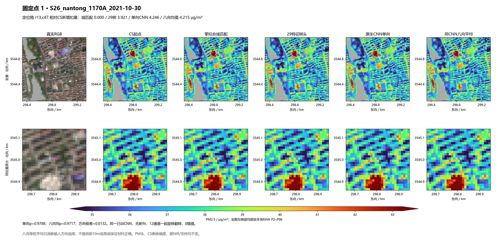
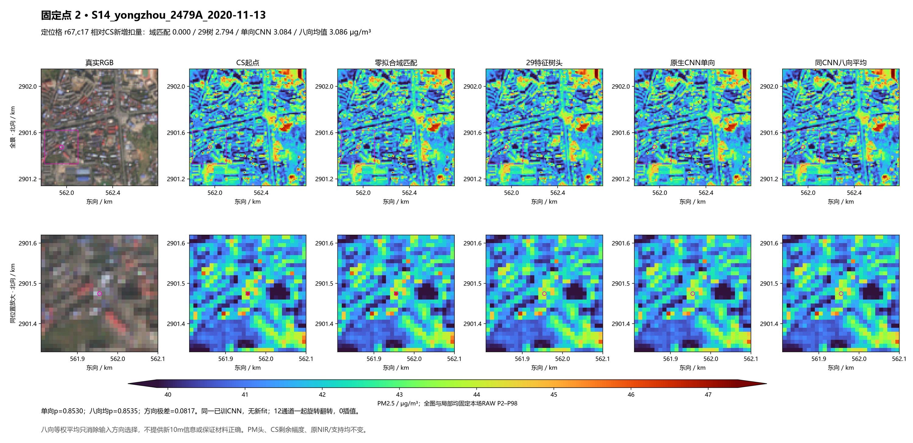
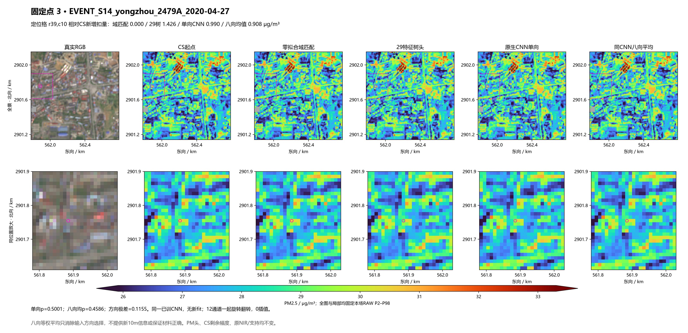
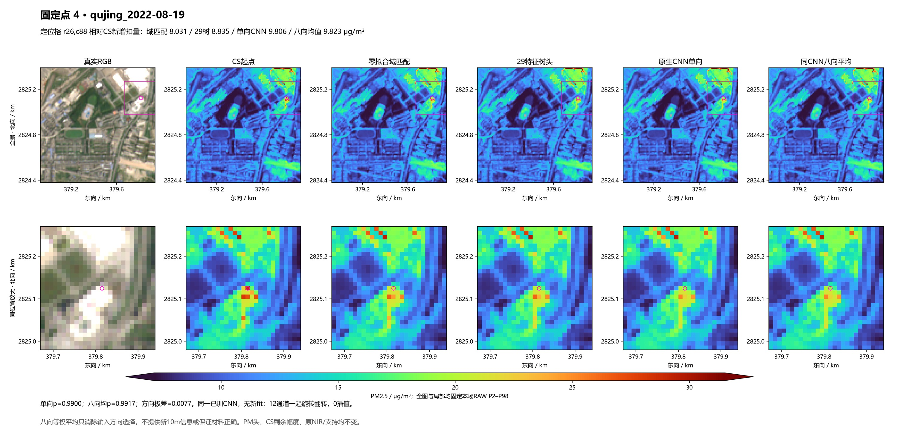
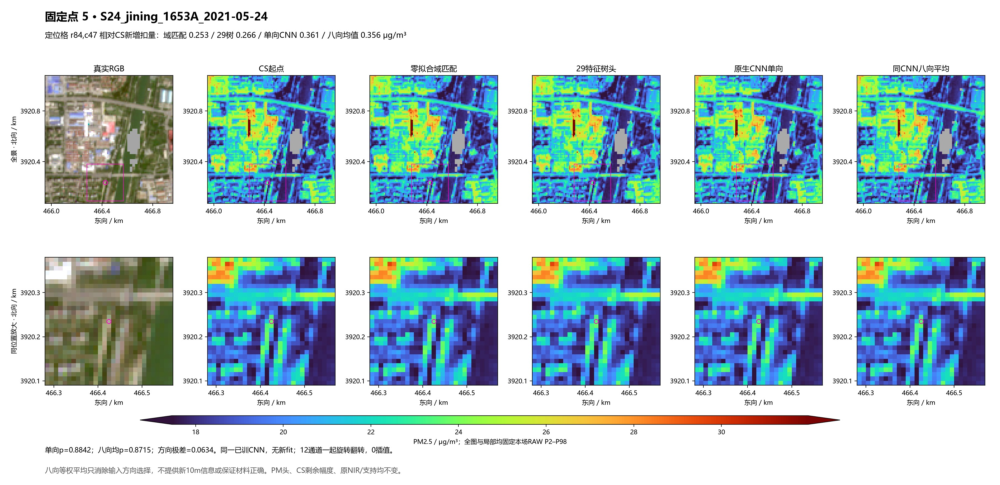
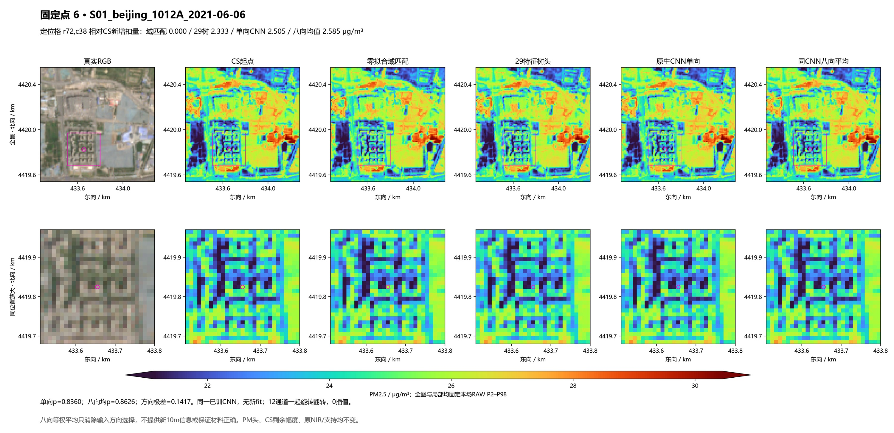

对同一真实12通道小窗精确旋转/翻转8种方向后平均材料p，继承原CS剩余扣量与冻结PM头。0新fit，206场同函数，不挑方向。
结果与局限 · 固定合同 · 同支持比较 · 固定6patch群不变检查 · 原30对象74格 · 25真实日期对
定位格八向平均相对单向追加扣量变化 -0.03084 μg/m³；方向均值不保证正确材料判断。

定位格八向平均相对单向追加扣量变化 +0.00177 μg/m³；方向均值不保证正确材料判断。

定位格八向平均相对单向追加扣量变化 -0.08229 μg/m³；方向均值不保证正确材料判断。

定位格八向平均相对单向追加扣量变化 +0.01689 μg/m³；方向均值不保证正确材料判断。

定位格八向平均相对单向追加扣量变化 -0.00520 μg/m³；方向均值不保证正确材料判断。

定位格八向平均相对单向追加扣量变化 +0.07956 μg/m³；方向均值不保证正确材料判断。
